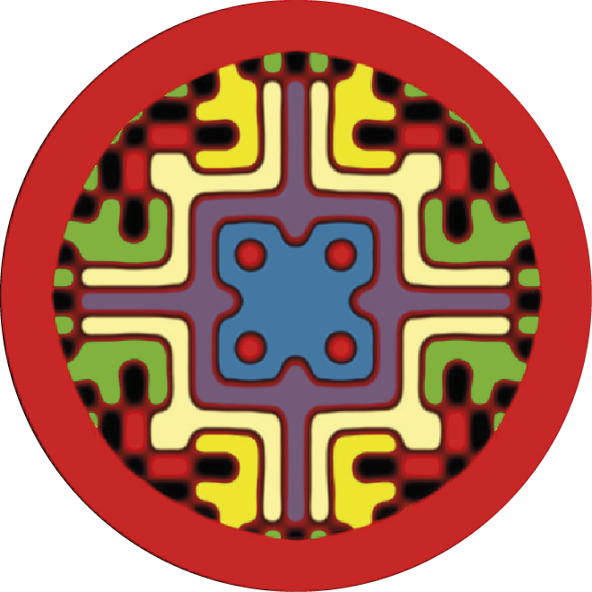

INCIDENCIA ACUMULADA DE RECAÍDA · 4 AÑOS
11.8%Blinatumomab
VS.21.4%Control
En el texto fuente también se comunican recaídas aisladas en el SNC: 1% frente a 3%.

CIRCLE PRESS01 / 05 EL ESTUDIO
AIEOP-BFM ALL 2017 evaluó la sustitución de dos ciclos de quimioterapia intensiva por dos ciclos de blinatumomab en primera línea.
Población pediátricaMenores de 18 años con LLA-B de alto riesgo
02 / 05 OBJETIVO PRINCIPAL
Supervivencia libre de eventos (EFS) a cuatro años.
IC 95%: 0.35–0.73
p = 0.0002
03 / 05 RECAÍDAS Y ERM
Resultados comunicados para recaídas a cuatro años y negativización de la enfermedad residual medible (ERM).
INCIDENCIA ACUMULADA DE RECAÍDA · 4 AÑOS
En el texto fuente también se comunican recaídas aisladas en el SNC: 1% frente a 3%.
NEGATIVIZACIÓN COMPLETA DE ERM
En pacientes con ERM positiva antes de la intervención; tras el primer ciclo de blinatumomab frente al segundo ciclo de quimioterapia intensiva.
04 / 05 SEGURIDAD
Algunos eventos fueron menos frecuentes con blinatumomab; la neurotoxicidad fue más frecuente.
Más frecuente con blinatumomab
En el análisis de Kaplan–Meier del texto fuente no se observaron diferencias en la sobrevida global.